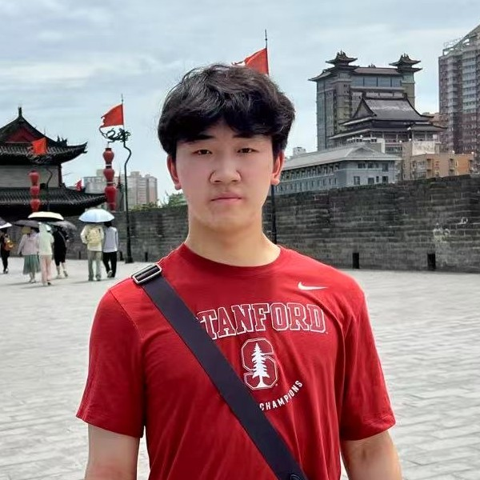

Ryan Zhang
Stanford University, Class of 2028
I'm an undergraduate at Stanford studying Math and Computer Science. I currently work on affordance-guided visuomotor policy learning and embodiment-agnostic robot data at the Robotics & Embodied AI Lab (REAL) with Professor Shuran Song.
Previously, I was advised by Professor César Terrer at MIT and Professors Laurel Symes and Holger Klinck at Cornell. I'm interested in building autonomous systems that interact with their environments in more versatile and complex ways.

News
- Spring 2026 UMI-Underwater accepted to RSS 2026.
- Spring 2025 Joined the REAL Lab at Stanford to work on robot learning.
- Spring 2024 Named a Regeneron STS Scholar.
- Fall 2023 Bioacoustic source-separation research at the Cornell Lab of Ornithology.
- Summer 2023 Natural climate solutions research at MIT CEE.
Research
-
UMI-Underwater: Learning Underwater Manipulation without Underwater TeleoperationRobotics: Science and Systems (RSS), 2026
A handheld gripper (UMI-Aquatic) that collects underwater manipulation data without underwater teleoperation, plus a depth-based affordance representation that transfers on-land demonstrations to underwater deployment.
-
PEDS-AI: A Novel UAV-Based Visual-Acoustic Pest Early Detection and Identification SystemIEEE Conference on Technologies for Sustainability (SusTech), 2023
A drone-based system combining computer vision and acoustic detection to identify agricultural pests in the field.
Projects
-
DensePPO: Unsupervised Dense Reward Generation for RL Fine-Tuning of BC PoliciesCS234 (Reinforcement Learning) class project, Stanford, 2026
Generate dense rewards by k-means-clustering waypoints in a behavior-cloning policy's latent space, then use them to fine-tune the BC policy with PPO on LIBERO manipulation tasks. Improves sample efficiency over sparse-reward BC + vanilla PPO.
Experience
- 2024 – present Stanford University — B.S. in Mathematics and Computer Science.
- 2025 – present REAL Lab, Stanford — undergraduate researcher with Shuran Song.
- 2023 Cornell Lab of Ornithology — research intern with Laurel Symes and Holger Klinck.
- 2023 MIT CEE (Terrer Lab) — research intern with César Terrer.